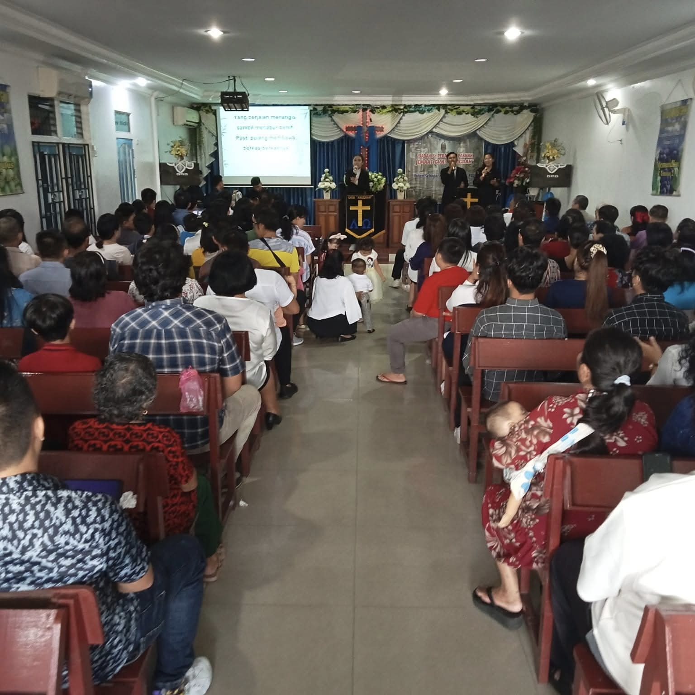
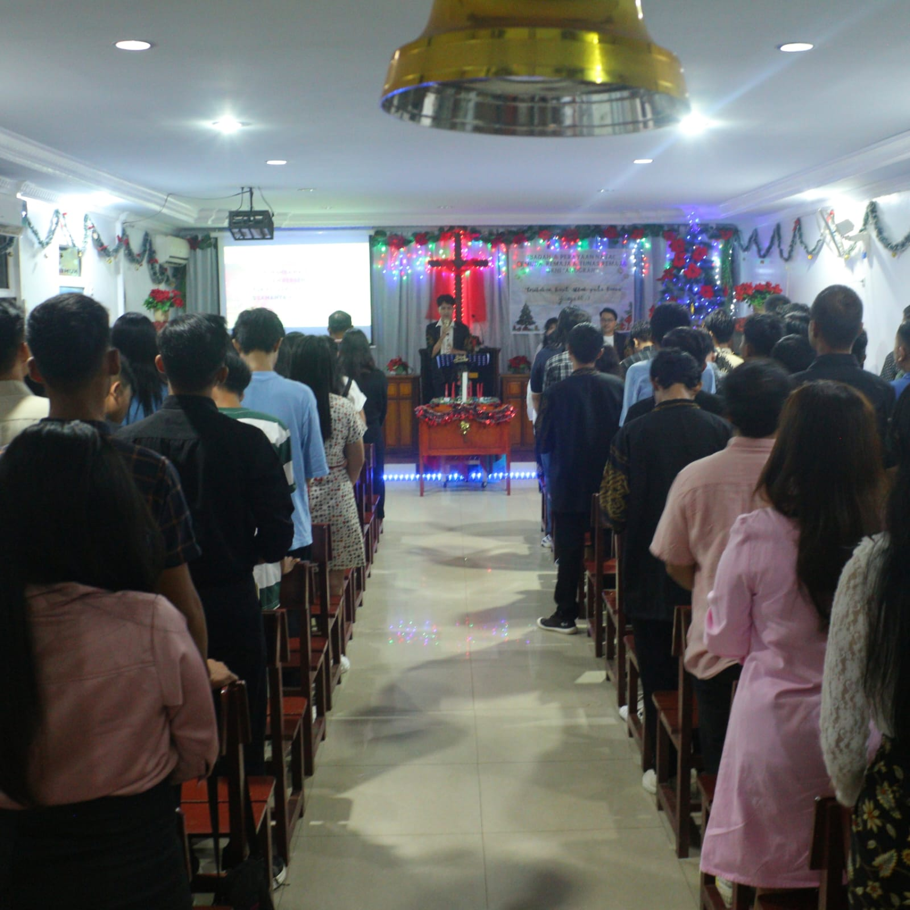
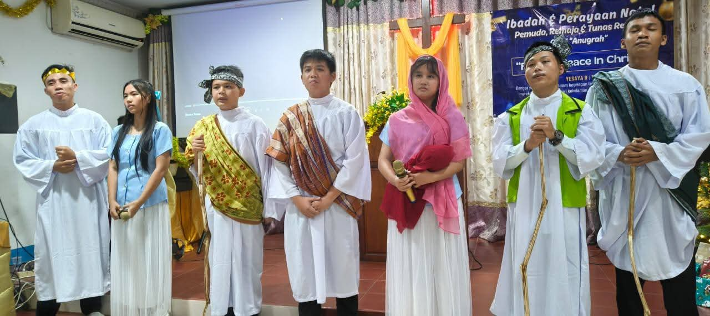
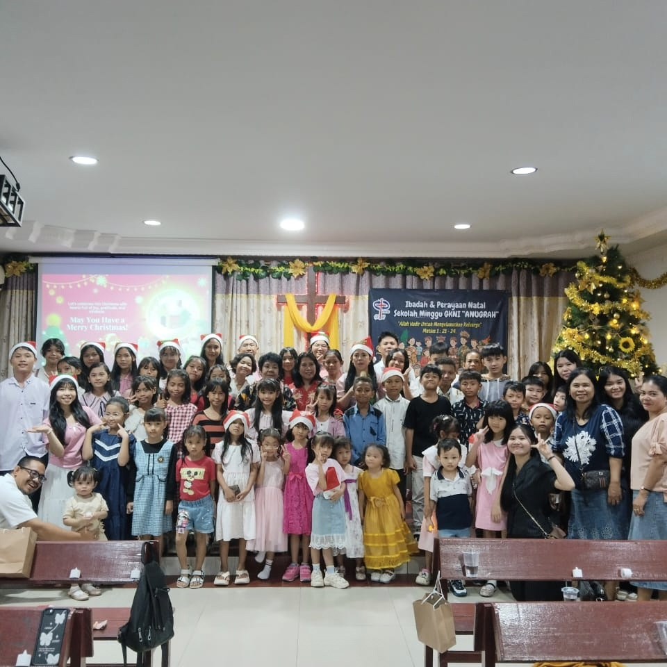

Gereja Kristen Nasional injili adalah gereja yang berdomisili di sungai raya, kalimantan barat, Indonesia. GKNI percaya kepada Allah Tritunggal: Allah Bapa, Allah Anak dan Allah Roh Kudus; dan percaya kepada Tuhan Yesus Kristus sebagai satu-satunya juruselamat manusia, kepala gereja, sumber kebenaran dan hidup. GKNI menerima Alkitab Perjanjian Lama dan Perjanjian Baru sebagai Firman Allah yang memiliki otoritas tertinggi gereja dan pedoman hidup bagi setiap anggota gereja.

Ibadah UMUM merupakan wadah persekutuan bagi seluruh jemaat tanpa batasan usia tertentu, khususnya bagi orang dewasa dan keluarga. Dalam komunitas ini, jemaat diajak untuk bertumbuh dalam iman, memperdalam pengenalan akan Tuhan, serta membangun hubungan yang saling menguatkan satu sama lain. Kegiatan yang dilakukan meliputi ibadah, persekutuan doa, ibadah rumah tangga, serta kegiatan kebersamaan lainnya yang mempererat persaudaraan di dalam Kristus.

Komunitas Pemuda adalah wadah bagi generasi muda gereja dari untuk bertumbuh secara rohani, mengembangkan potensi diri, serta membangun karakter yang sesuai dengan nilai-nilai Kristiani. Melalui berbagai kegiatan seperti ibadah pemuda, sharing, pelayanan, dan kegiatan kreatif, pemuda didorong untuk menjadi pribadi yang aktif, positif, dan berdampak. Komunitas ini juga menjadi tempat untuk menjalin relasi yang sehat, saling mendukung, dan bertumbuh bersama dalam iman.

Komunitas Tunas ditujukan bagi anak-anak kelas 1 SMP sampai dengan 3 SMP, yang mulai belajar mengenal Tuhan secara lebih dalam. Dengan pendekatan yang menyenangkan, kreatif, dan penuh kasih, anak-anak dibimbing untuk memahami nilai-nilai iman Kristen sejak dini. Kegiatan dalam Tunas biasanya meliputi Firman Tuhan, permainan edukatif, pujian, serta aktivitas interaktif yang membantu anak-anak belajar dengan cara yang menarik dan mudah dipahami.

Sekolah Minggu adalah pelayanan khusus bagi anak-anak kelas TK- kelas 6 SD, untuk belajar firman Tuhan melalui metode yang interaktif dan menyenangkan. Anak-anak diajak untuk mengenal kasih Tuhan, belajar nilai-nilai kebaikan, serta membangun dasar iman yang kuat sejak usia dini. Pembelajaran dilakukan melalui cerita Alkitab, nyanyian, permainan, dan aktivitas kreatif yang sesuai dengan usia mereka. (dibagi sesuai kelas usia).
Hamba Tuhan yang melayani
 GKNI ANUGRAH
GKNI ANUGRAH
GKNI ANUGRAH
GKNI ANUGRAH